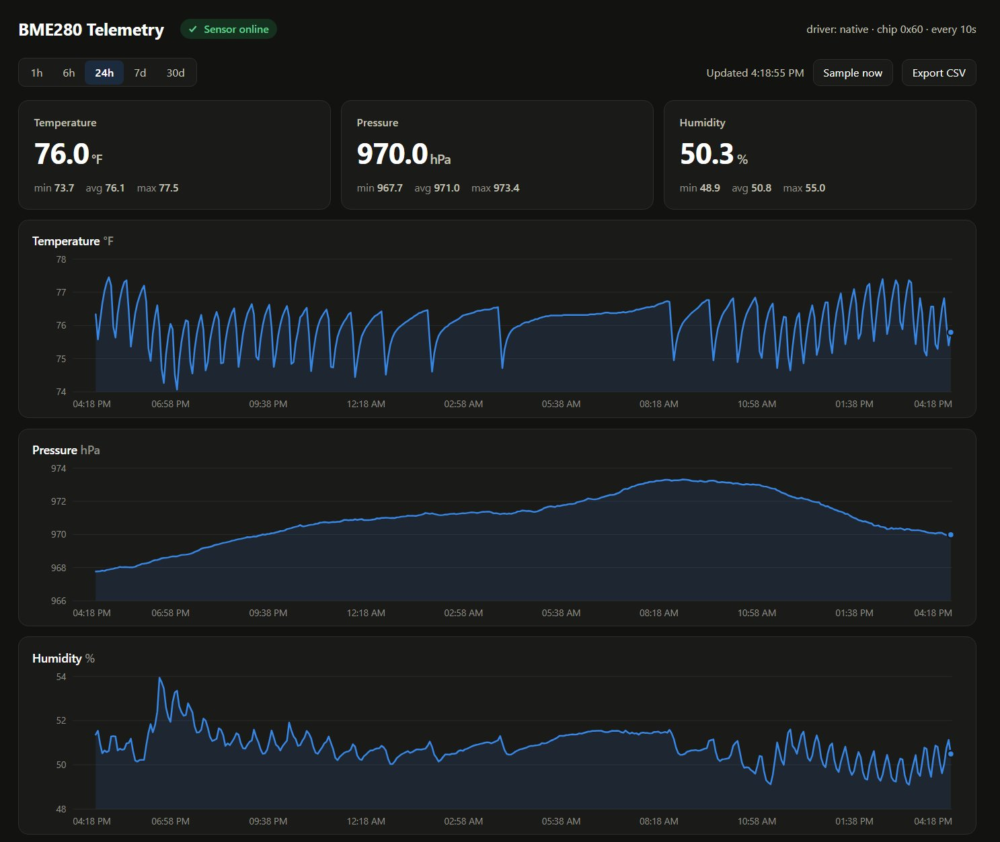
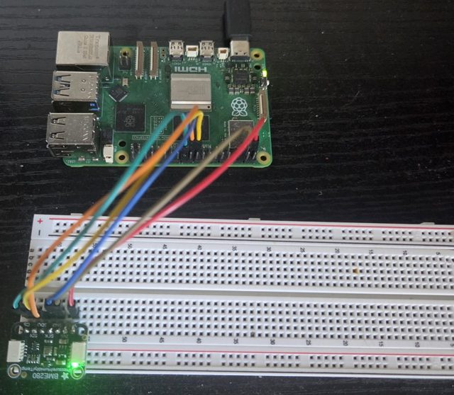

Embedded · Raspberry Pi 5
BME280 Pi Telemetry
A sensor-to-dashboard telemetry pipeline: a C driver reads a BME280 over SPI, and a FastAPI service stores the readings in PostgreSQL and serves them to a live dashboard with history and CSV export.
- BME280
- SPI
- C driver
- FastAPI
- PostgreSQL
- Dashboard


-
01
Driver written in C
Reads the sensor over SPI with the chip's calibration and compensation math, built as a CLI and a shared library loaded from Python.
-
02
Fault tolerant
Reconnects the sensor after failed reads, rejects out-of-range data and prunes old readings automatically.
-
03
Shipped like a product
Packaged with Docker and GitHub Actions CI building ARM64 and AMD64 images.